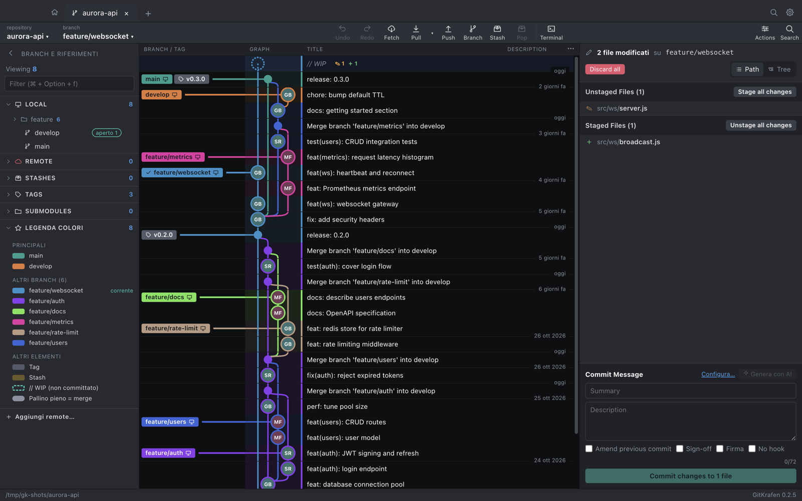

A desktop Git client modelled on GitKraken: lane-based commit graph, staging, conflict editor, integrated terminal and AI commit messages.
GitKrafen is a full-featured desktop Git client modelled on GitKraken: the same tabbed layout, toolbar, side panel, lane-based commit graph with avatars and a commit panel on the right, with the same day-to-day workflow.
It started from a simple question: how much of a commercial Git GUI can be rebuilt on top of the plain git command line? Every operation runs through the system git, so each action behaves exactly as it would in a terminal — same hooks, same configuration, same results — while the app adds what a GUI is good at.
It also goes beyond the original in a few places: a permanent Launchpad home listing every repository with live status, stable high-contrast branch colours, privacy-friendly avatars and optional AI-written commit messages.
The commit graph draws coloured lanes with avatars, merged local and remote branch labels, tags, stashes and day separators. Click a branch to highlight all of its commits and dim the rest.
It is virtualised, so it stays fluid with tens of thousands of commits and many parallel branches, and a file-system watcher refreshes the view within about half a second of any change, even if it was made from another tool.
The application is an Electron app with a React and TypeScript interface. A thin back end launches the system git for every operation and parses its output, rather than reimplementing Git, which keeps behaviour identical to the command line.
The project is covered by an automated test suite that runs against real temporary repositories, and is packaged as a signed macOS DMG by a single script.
Desktop shell: window and menus, IPC, the system git service, encrypted secrets in the keychain, OAuth loopback flows and the pty bridge for the integrated terminal.
The whole interface — virtualised commit graph, diff and merge views, Launchpad, dialogs and command palette — built with React 18 and bundled with Vite.
Strictly typed renderer, including pure, well-tested modules for graph layout, diff/patch building and conflict parsing.
Every repository operation runs through the system git, so behaviour, hooks and configuration are identical to the command line.